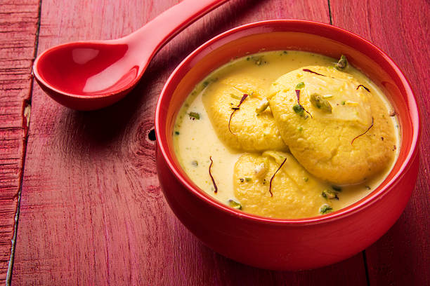

Rasmalai
HOME

Description
Rasmalai is widely considered one of the finest gems of the Indian culinary world. Often hailed as the "Queen of Indian desserts", it is a luxurious sweet composed of soft, spongy fresh-cheese discs (chhena) that are poached and then completely immersed in a rich, cardamom-scented, saffron-infused reduced milk syrup called rabri. It is traditionally garnished with slivered pistachios and almonds and served thoroughly chilled.
Rasmalai isn't just a favourite at South Asian tables-it holds international culinary prestige. It was spectacularly ranked as the second-best cheese dessert in the world by the global food guide TasteAtlas, beating out legendary treats like the classic New York Cheesecake and various European pastries. International critics frequently praise it as a "crustless cheesecake" due to its remarkably delicate, melt-in-the-mouth texture
Ingredients
- 1 litre fresh full-fat cow's milk (yields the softest texture)
- 2 tbsp lemon juice or white vinegar (diluted with 2 tbsp water)
- 1.5 cups granulated white sugar (for the boiling syrup)
- 5 cups water (for the boiling syrup)
- 1 litre ice-cold water
- 1 litre full-cream whole milk
- 1/2 cup sugar (adjust to your preference)
- 1/2 tsp green cardamom powder
- 12-15 saffron strands (kesar), soaked in 2 tbsp warm milk
- 2 tbsp blanched pistachios and almonds, finely sliced
Steps to make Authentic Saffron Rasmalai From Scratch
- Bring 1 litre of full-cream whole milk to a boil in a heavy-bottomed pan, then lower the heat to a steady simmer
- Cook the milk for 20-25 minutes until reduced by half, regularly scraping down the clotted cream (malai) from the sides back into the pan
- Stir in 1/2 cup of sugar, 1/2 tsp of green cardamom powder, 12-15 pre-soaked saffron strands, and 1 tbsp of sliced pistachios/almonds, then simmer for 2 minutes and keep this rabri milk warm
- Boil a separate 1 litre of fresh cow's milk in a deep pot, then immediately turn off the heat and let it rest for 2 minutes
- Gradually add 2 tbsp of diluted lemon juice or vinegar (mixed with 2 tbsp of water) while stirring gently until the milk completely separates into white chhena and clear greenish whey
- Drop a cup of ice-cold water into the pot to halt the cooking, then strain the chhena through a colander lined with a clean muslin cloth
- Wash the trapped chhena under cold tap water for 1 minute to rinse out any sourness from the lemon or vinegar
- Gather the corners of the cloth, squeeze gently to expel prominent liquid, and hang it up for 30-45 minutes to drain completely while maintaining basic internal moisture
- Transfer the crumbly chhena to a wide plate and use the smooth heel of your palm to firmly mash and drag it against the surface for 5-8 minutes until it forms a non-sticky, velvet-smooth dough
- Divide the smooth dough into 12 equal portions, roll each between your palms into a completely crack-free sphere, and press it gently to shape it into a flattened disc
- Combine 1.5 cups of sugar and 5 cups of water in a broad, deep vessel and bring it to a vigorous, roaring boil
- Slide the chhena discs into the bubbling syrup, cover tightly with a lid, and let them boil undisturbed on a medium-high flame for 15 minutes until they balloon to double their size
- Turn off the heat and let the vessel rest covered for 20-30 minutes so the delicate structure stabilizes
- Lift each disc out with a slotted spoon, gently press it between two spoons to squeeze out the excess sugar syrup without breaking it, and drop it directly into the warm saffron rabri
- Let the rasmalai soak at room temperature for an hour, refrigerate for at least 4 hours to chill thoroughly, and serve garnished with the remaining slivered almonds and pistachios